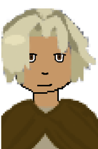

Magic Murder Mystery
The Anarchists
The Anarchists hate everything to do with the Monarchy.
They instead look for equality among all humans.
Their fierce compassion is commendable, yet can be dangerous...
Meet the Anarchists

Mortan
He is a strong idealist, believing that all humans can work together.
He is stubborn to a fault and unrelenting in his ideals.
His favorite flower is a honey suckle and he is a Gemini.
Choose A Side